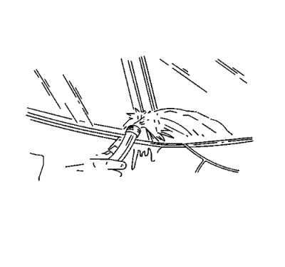

Advertencia: Consulte Advertencia de manejo de vidrio y chapa en la sección Prólogo.
- Utilice un sistema adhesivo de uretano que cumpla la especificación GM 3651G de GM
- Elimine todos los restos o fragmentos sueltos de pegamento de uretano de la zona a fijar-soldar.
- Si se vuelve a utilizar la ventanilla original, retire todo el cordón de pegamento de uretano existente, salvo unos 2 mm (3/64 pulg.) aproximadamente, del reborde a fijar-soldar con un cuchillo limpio o un rascador de cuchilla.
- Compruebe si existe alguno de los siguientes problemas para ayudar a evitar una rotura del cristal a posteriori:
| • | El reborde de la abertura de la ventanilla |
| • | Cualquier otro obstáculo o irregularidad en el reborde a fijar-soldar |
Nota: Si existe corrosión en el reborde a fijar-soldar o si es necesario sustituir o reparar la chapa, deberá repasarse el reborde a fijar-soldar para restaurar la resistencia de la zona de unión. Si es necesario reparar la pintura, cubra la zona de unión de la brida antes de aplicar la capa de color para proporcionar una superficie limpia lista para la imprimación. Los materiales como los productos BASF DE15®, DuPont 2610®, Sherwin-Williams PSE 4600 y NP70® y Martin-Semour 5120 y 5130®, PPG DP90LF SPIES/HECKER 3688/8590 - 3688/5150 - 4070/5090 STANDOX 11158/13320 -- 14653/14980 están aprobados para esta aplicación.
- Después de reparar la apertura como se ha indicado, lleve a cabo los siguientes pasos:
| 5.1. | Retire todos los restos de cristal roto del panel exterior del salpicadero, los asientos, el suelo y los conductos de descongelación. |
| 5.2. | Limpie la zona que rodea el borde de la superficie interior de la ventanilla con un trapo sin pelusas humedecido con una mezcla 50/50 de alcohol isopropílico y agua en volumen. |
- Verifique que todos los pegamentos de uretano e imprimaciones no han alcanzado sus fechas de caducidad.
Advertencia : Si no se prepara la zona antes de realizar la aplicación de la imprimación, podrá provocarse una unión insuficiente de pegamento de uretano. Si no se permite que el adhesivo de uretano se una lo suficiente podría ocurrir que ocupantes no sujetos fuesen expulsados del vehículo y se produjeran lesiones personales.
Nota: No aplique la imprimación negra n.º 3 en el cordón (1) de pegamento de uretano existente del reborde a fijar-soldar. Aplique la imprimación únicamente en muescas, arañazos o superficies imprimadas.
- Agite la imprimación negra n.º 3 a fijar-soldar durante al menos 1 minuto.
- Utilice un marcador nuevo para aplicar la imprimación en la superficie del reborde a fijar-soldar (1).
- Deje secar la imprimación a fijar-soldar durante unos 10 minutos aproximadamente.

- Con la ayuda de un asistente, ajuste en seco la ventanilla (1) en la abertura para determinar la posición correcta.
- Asegúrese de que los pasadores de ubicación de la ventanilla están colocados en los orificios de ubicación del reborde a fijar-soldar.
- Utilice cinta adhesiva protectora para marcar las ubicaciones de la ventanilla en la abertura.
- Corte la protección de la parte central y retire la ventanilla de la abertura.

Nota: Tenga cuidado al aplicar la preparación de cristales transparente n.º 1 sobre la ventanilla. Esta imprimación se seca casi al instante y puede manchar la zona de visualización de la ventanilla si no se aplica uniformemente.
- Utilice un marcador nuevo para aplicar la preparación de cristales transparente n.º 1 en la zona a unos 18 mm (0,71 pulg.) aproximadamente alrededor del perímetro entero de la superficie interior de la ventanilla.
Limpie inmediatamente la zona imprimada del cristal con un trapo limpio sin pelusas.

- Aplique una segunda capa de preparación de cristales transparente n.º 1 en la misma zona del cristal.

Nota: La imprimación para cristales negra n.º 2 es eficaz hasta 8 horas después de aplicarla en el cristal. La superficie imprimada del cristal debe mantenerse limpia.
- Agite la imprimación para cristales negra n.º 2 durante al menos 1 minuto.
- Utilice un marcador nuevo para aplicar la imprimación para cristales negra n.º 2 en las mismas zonas (2) en las que se aplicó la preparación de cristales transparente n.º 1.
- Deje secar la imprimación para cristales durante unos 10 minutos aproximadamente.

- Corte el difusor del aplicador de modo que suministre un cordón de 12,7 mm (1/2 pulg.) de anchura y 12,7 mm (1/2 pulg.) de altura.

- Utilice una pistola de calafatear de tipo cartucho para aplicar un cordón continuo y liso de pegamento de uretano.

- Utilice el borde de la ventanilla como guía para el difusor para aplicar el pegamento de uretano (1) en la superficie interior de la ventanilla (3).
- Con la ayuda de un asistente, coloque la ventanilla (1) en la abertura.
- Alinee las líneas de la cinta adhesiva protectora con la ventanilla y la carrocería.

Nota: Para evitar que algún objeto dañe la ventanilla al golpear un borde expuesto durante el montaje, la ventanilla debe estar a 1 mm (0,040 pulg.) por debajo de la superficie de la chapa.
- Presione firmemente alrededor de toda la periferia de la ventanilla para impregnar el cordón de uretano.
- Fije la ventanilla a la carrocería con cinta adhesiva para minimizar su movimiento hasta que se seque el pegamento de uretano.

- Limpie cualquier exceso de pegamento de uretano de la carrocería.

Nota: No dirija una corriente fuerte de agua a alta presión al pegamento de uretano recientemente aplicado.
- Utilice un pulverizador suave de agua caliente para efectuar inmediatamente la prueba de agua en el cristal.
- Compruebe la estanqueidad del cristal.
- Si se detecta alguna fuga, utilice una espátula de plástico para aplicar pegamento de uretano adicional en el punto de fuga.
- Vuelva a comprobar la estanqueidad del cristal.
Aviso: Si no se permite que el adhesivo de uretano se endurezca lo suficiente, podría darse el caso de que los ocupantes que no tuvieran puesto el cinturón de seguridad fueran expulsados del vehículo y se produjeran lesiones personales.| • | Para el curado por humedad de un adhesivo de uretano, es necesario un periodo mínimo de 6 horas a 21°C (70°F) o más, con al menos un 30 por ciento de humedad relativa. Se precisa un mínimo de 24 horas para que el adhesivo de uretano cure completamente. |
| • | Para el curado químico de un adhesivo de uretano se requiere al menos 1 hora. |
- Mantenga las condiciones que se indican a continuación para secar de forma adecuada el pegamento de uretano:
| • | Baje parcialmente la ventanilla de una de las puertas para evitar acumulaciones de presión cuando cierre las puertas antes de que se produzca el secado del pegamento de uretano. |
| • | No conduzca el vehículo hasta que el pegamento de uretano se haya secado. Consulte los tiempos de secado indicados con anterioridad. |
| • | No utilice aire comprimido para secar el pegamento de uretano. |
- Complete el montaje de la ventanilla.